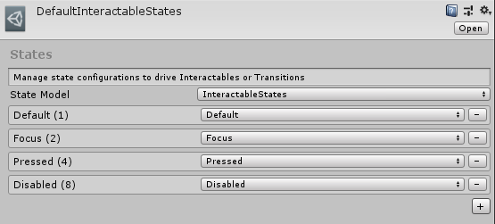
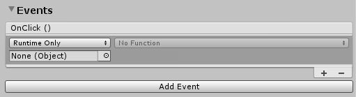
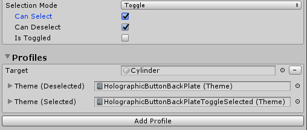

Interactable (インタラクタブル、インタラクション可能な)

Interactable コンポーネントは、あらゆるオブジェクトを容易に interactable(インタラクション可能) にし、入力に応答させるオールインワン コンテナです。Interactable は、タッチ、ハンド レイ、音声などを含むすべてのタイプの入力のためのキャッチオールとして機能し、これらのインタラクションを イベント および Visual Themes (ビジュアル テーマ) の応答に流し込みます。このコンポーネントを使用すると、ボタンの作成やフォーカスによるオブジェクトの色の変更などを簡単に行うことができます。
Interactable の設定方法
このコンポーネントには、3つの主要な構成セクションがあります:
- General 入力設定
- 複数の GameObject を対象とした ビジュアル テーマ
- イベント ハンドラ
General 入力設定

States (ステート)
States は Interactable プロファイルとビジュアル テーマで利用する、押された、見られている、といったインタラクションのフェーズを定義する ScriptableObject パラメータです。
DefaultInteractableStates (Assets/MRTK/SDK/Features/UX/Interactable/States/DefaultInteractableStates.asset) は MRTK にそのまま含まれている、Interactable コンポーネントのデフォルトのパラメーターです。

DefaultInteractableStates アセットには4つのステートが含まれており、InteractableStates ステート モデルの実装を利用します。
Default: 何も起こっていません。これは最も独立したベース ステートです。
Focus: オブジェクトがポイントされています。これは単一のステートで、他のステートは現在設定されていませんが、Default より優先されます。
Press: オブジェクトがポイントされており、ボタンまたはハンドが押しています。Press ステートは Default と Focus よりも優先されます。このステートは、Physical Press (物理的な押下) に対するフォールバックとしても設定されます。
Disabled: このボタンはインタラクティブであってはなりません。また、何らかの理由でこのボタンが現在使用できないことが視覚的なフィードバックによってユーザーに通知されます。理論的には、Disabled ステートには他のすべての状態を含めることができますが、Enabled がオフの場合は、Disabled ステートが他のすべてのステートより優先されます。
リスト内の順序に応じて、ビット値 (#) がステートに割り当てられます。
Note
一般に、Interactable コンポーネントを作成する場合は、DefaultInteractableStates (Assets/MRTK/SDK/Features/UX/Interactable/States/DefaultInteractableStates.asset) を使用することをお勧めします。
ただし、テーマの駆動に使用できる Interactable のステートは17ありますが、一部は他のコンポーネントによって駆動されるように設計されています。以下は、そのようなステートで、機能が組み込まれているもののリストです。
- Visited: Interactable がクリックされました。
- Toggled: ボタンがトグル状態になっているか、Dimension index が奇数です。
- Gesture: ハンドまたはコントローラーが押され、元の位置から移動しました。
- VoiceCommand: Interactable をトリガーするのに音声コマンドが使われました。
- PhysicalTouch: タッチ入力が現在検出されています。
NearInteractionTouchableを使用して有効にしてください。 - Grab: ハンドが現在オブジェクトの境界内でグラブしています。
NearInteractionGrabbableを使用して有効にしてください。
Enabled (有効)
Interactable が開始時に有効かどうかを切り替えます。これは、コードの Interactable.IsEnabled に対応します。
Interactable の enabled プロパティは、GameObject/Component で (SetActive などによって) 設定された enabled プロパティとは異なります。GameObject または Interactable MonoBehavior を無効にすると、入力、ビジュアル テーマ、イベントなど、クラス内のすべてのものの実行が無効になります。Interactable.IsEnabled を介して無効にすると、ほとんどの入力処理が無効になり、関連する入力ステートがリセットされます。ただし、クラスはすべてのフレームで実行され、無視される入力イベントを受け取ります。これは、Interactable をビジュアル テーマを介して disabled ステートで表示する場合に便利です。この典型的な例は、すべての必須入力フィールドが完了するのを待つ送信ボタンです。
Input Actions (入力アクション)
入力設定またはコントローラー マッピング プロファイルから、Interactable コンポーネントが反応する input action を選択します。
このプロパティは、実行時に Interactable.InputAction を使用してコードで設定できます。
IsGlobal (グローバルである)
true の場合、選択した input action のグローバル入力リスナーとしてコンポーネントがマークされます。デフォルトの動作は false で、この Interactable collider/GameObject のみへの入力に制限されます。
このプロパティは、実行時に Interactable.IsGlobal を使用してコードで設定できます。
Speech Command (音声コマンド)
音声対話で OnClick イベントをトリガーするための、MRTK Speech Commands Profile で設定された Speech command (音声コマンド) です。
このプロパティは、実行時に Interactable.VoiceCommand を使用してコードで設定できます。
Requires Focus (フォーカスが必要)
true の場合、音声コマンドは、ポインタからすでにフォーカスがある場合にのみ、Interactable を作動させます。false の場合、Interactable は選択した音声コマンドのグローバル リスナーとして機能します。複数のグローバル スピーチ リスナーをシーン内で整理するのは困難な場合があるため、デフォルトの動作は true です。
このプロパティは、実行時に Interactable.VoiceRequiresFocus を使用してコードで設定できます。
Selection Mode (選択モード)
このプロパティは、選択ロジックを定義します。Interactable がクリックされると、次の Dimension レベルに反復されます。Dimensions はランクと似ており、入力 (フォーカス、押下など) の外側の状態を定義します。これらは、ボタンに関連付けられたトグル状態やその他のマルチランク状態を定義する場合に便利です。現在の Dimension レベルは、Interactable.DimensionIndex で取得できます。
使用可能な選択モードは次のとおりです:
- Button - Dimensions = 1、シンプルなクリック可能な Interactable
- Toggle - Dimensions = 2、Interactable は on/off 状態を交互に切り替えます
- Multi-dimension - Dimensions >= 3、クリックするたびに現在の dimension level に 1 加算します。ボタンの状態をリストなどに定義する場合に便利です。
Interactable では、Dimension ごとに複数のテーマを定義することもできます。たとえば、SelectionMode=Toggle の場合、あるテーマを Interactable が deselected のときに適用させ、別のテーマをコンポーネントが selected のときに適用させられます。
現在の選択モードは、実行時に Interactable.ButtonMode を使用して照会できます。実行時にモードを更新するには、 Interactable.Dimensions プロパティを使用して、目的の機能に一致させます。さらに、Toggle および Multi-Dimension モードで役立つ、現在の Dimension には、Interactable.CurrentDimension からアクセスできます。
Interactable プロファイル
Profiles は、GameObject と ビジュアル テーマ の間の関係を作成するアイテムです。プロファイルは、ステートの変更が起こる 時にテーマによって操作されるコンテンツを定義します。
テーマはマテリアルのような働きをします。これらは、現在の状態に基づいてオブジェクトに割り当てられるプロパティのリストを含むスクリプタブル オブジェクトです。テーマも再利用可能で、複数の Interactable UX オブジェクトに割り当てることができます。
Reset On Destroy
ビジュアル テーマはターゲットとなる GameObject のさまざまなプロパティを、そのクラスと選択されたテーマ エンジンに応じて変更します。もし Interactable コンポーネントが破棄される時に Reset On Destroy が true の場合、コンポーネントはすべての変更されたプロパティをアクティブなテーマから元の値へとリセットします。そうでなければ、破棄されるときに Interactable コンポーネントはすべての変更されたプロパティをそのままにします。後者の場合、値の最後の状態は他の外部のコンポーネントによって変更されない限り持続します。デフォルトは false です。

Events
すべての Interactable コンポーネントには、コンポーネントが単純に選択されたときに発火する OnClick イベントがあります。ただし、Interactable は、OnClick 以外の入力イベントの検出にも使用できます。
Event Receiver (イベント レシーバー) 定義の新しいタイプを追加するには、[Add Event] ボタンをクリックします。追加したら、目的のイベントのタイプを選択します。
)
さまざまなタイプの入力に応答する、さまざまなタイプのイベント レシーバーがあります。MRTK には、次のレシーバーが同梱されています。
InteractableAudioReceiverInteractableOnClickReceiverInteractableOnFocusReceiverInteractableOnGrabReceiverInteractableOnHoldReceiverInteractableOnPressReceiverInteractableOnToggleReceiverInteractableOnTouchReceiver
カスタム レシーバーを作成するには、ReceiverBase を拡張する新しいクラスを作成します。

Toggle Event Receiver の例
Interactable Receivers
InteractableReceiver コンポーネントを使用すると、元となる Interactable コンポーネントの外部でイベントを定義できます。InteractableReceiver は、別の Interactable によって発火されるフィルターされたイベント タイプをリッスンします。Interactable プロパティが直接割り当てられていない場合、Search Scope プロパティは、自身、親、または、子 GameObject のどの方向で InteractableReceiver がイベントをリッスンするかを定義します。
InteractableReceiverList も同じように動作しますが、マッチするイベントがリストとなっています。

カスタム イベントを作成
Visual Themes と同様に、イベントを拡張して任意の状態パターンを検出したり、機能を公開したりすることができます。
カスタムイベントは、主に次の2つの方法で作成できます:
ReceiverBaseクラスを拡張して、イベント タイプのドロップダウン リストに表示されるカスタム イベントを作成します。Unity イベントはデフォルトで提供されますが、追加の Unity イベントを追加したり、Unity イベントを非表示に設定したりすることができます。この機能を使用すると、プロジェクトにおいてデザイナーはエンジニアと協力し、デザイナーがエディターで設定できるカスタム イベントを作成できます。ReceiverBaseMonoBehaviorクラスを拡張して、Interactable または別のオブジェクトに配置できる完全にカスタムなイベント コンポーネントを作成します。ReceiverBaseMonoBehaviorは、Interactable を参照してステートの変化を検出します。
ReceiverBase の拡張例
CustomInteractablesReceiver クラスは、Interactable に関するステータス情報を表示し、カスタム イベント レシーバの作成例となります。
public CustomInteractablesReceiver(UnityEvent ev) : base(ev, "CustomEvent")
{
HideUnityEvents = true; // レシーバーの Unity イベントを非表示にします。コードのみであると意味します。
}
次のメソッドは、カスタム イベント レシーバーの作成時にオーバーライドまたは実装する場合に便利です。 ReceiverBase.OnUpdate() は、ステートのパターン/遷移の検出に使用できる抽象メソッドです。さらに、ReceiverBase.OnVoiceCommand() および ReceiverBase.OnClick() メソッドは、Interactable が選択されている場合にカスタム イベント ロジックを作成するのに便利です。
public override void OnUpdate(InteractableStates state, Interactable source)
{
if (state.CurrentState() != lastState)
{
// 状態が変わったので、何か新しいことをする
lastState = state.CurrentState();
...
}
}
public virtual void OnVoiceCommand(InteractableStates state, Interactable source,
string command, int index = 0, int length = 1)
{
base.OnVoiceCommand(state, source, command, index, length);
// 音声コマンドが呼ばれたので、何かアクションを実行する
}
public virtual void OnClick(InteractableStates state,
Interactable source,
IMixedRealityPointer pointer = null)
{
base.OnClick(state, source);
// クリックが呼ばれたので、何かアクションを実行する
}
Inspector にカスタム イベント レシーバー フィールドを表示
ReceiverBase スクリプトは、 InspectorField 属性を使用して Inspector (インスペクター) にカスタム プロパティを公開します。次に、Vector3 のツールチップとラベル情報を持つカスタム プロパティの例を示します。このプロパティは、Interactable GameObject が選択され、関連付けられた Event Receiver タイプが追加されている場合に、インスペクターで設定可能として表示されます。
[InspectorField(Label = "<Property label>",Tooltip = "<Insert tooltip info>",Type = InspectorField.FieldTypes.Vector3)]
public Vector3 EffectOffset = Vector3.zero;
Interactable の使用方法
シンプルなボタンを作成する
入力イベントを受信するように構成された GameObject に Interactable コンポーネントを追加することで、簡単なボタンを作成することができます。入力を受け取るために自身または子要素にコライダーを持っていることがあります。Unity UI ベースの GameObject で Interactable を使用する場合は、Canvas GameObject の下に配置する必要があります。
ボタンをさらに一歩進めて、新しいプロファイルを作成し、GameObject 自体を割り当て、新しいテーマを作成します。さらに、OnClick イベントを使用して、何かを実行します。
Note
押下可能な Button (ボタン) を作成するには、PressableButton コンポーネントが必要です。さらに、PhysicalPressEventRouter コンポーネントは、押下イベントを Interactable コンポーネントに転送するために必要です。
Toggle Button (トグル ボタン) と Multi-Dimension ボタンの作成
トグル ボタン
ボタンをトグル可能にするには、Selection Mode フィールドを Toggle タイプに変更します。Profiles セクションでは、それぞれのプロファイルに、Interactable がトグル オンになっている場合に使用される新しいトグル用のテーマが追加されます。
SelectionMode が Toggle に設定されている場合、IsToggled チェック ボックスを使用して、実行時初期化時のコントロールのデフォルト値を設定できます。
CanSelect は、Interactable が off から on に遷移できることを意味し、CanDeselect はその逆を意味します。

開発者は、SetToggled および IsToggled インタフェースを使用して、コードを介して Interactable のトグル状態を取得/設定できます。
// SelectionMode = Toggle (すなわち Dimensions == 2) を使用する場合
// Interactable を選択して、トグルをオンにする
myInteractable.IsToggled = true;
// Interactable が選択されているかを取得する
bool isSelected = myInteractable.IsToggled;
トグル ボタン コレクション
トグル ボタンのリストを作り、一度にアクティブにできるのは1つだけにすることがよくあります。これはラジアル セットまたはラジオ ボタンなどとも呼ばれます。
この機能を有効にするには、InteractableToggleCollection コンポーネントを使用します。このコントロールにより、常に1つの Interactable のみがオンになります。RadialSet (Assets/MRTK/SDK/Features/UX/Interactable/Prefabs/RadialSet.prefab) も、すぐに使える素晴らしい出発点です。
カスタム ラジオ ボタン グループを作成するには:
- 複数の Interactable GameObjects/ボタンを作成します。
- それぞれの Interactable を SelectionMode = Toggle、CanSelect = true、および、CanDeselect = false に設定します。
- すべての Interactables に対して、空の親 GameObject を作成し、InteractableToggleCollection コンポーネントを追加します。
- すべての Interactables を InteractableToggleCollection の ToggleList に追加します。
- InteractableToggleCollection.CurrentIndex プロパティを設定して、起動時にデフォルトで選択されるボタンを決定します。

Multi-Dimension ボタン
Multi-Dimension 選択モードは、連続的なボタンや、速い(1倍)、やや速い(2倍)、最も速い(3倍) という3つの値で速度をコントロールするといったような、3つ以上のステップを持つボタンを作成するために使用します。
Dimensions が数値の場合、最大9つのテーマを追加して、それぞれの速度設定のボタンのテキスト ラベルまたはテクスチャを制御できます。各ステップには異なるテーマを使用します。
すべてのクリックイベントは実行時に DimensionIndex の値を 1 ずつ進め、Dimensions の値に到達すると、このサイクルは 0 にリセットされます。

開発者は、DimensionIndex を評価して、どのディメンションが現在アクティブかを判断できます。
// SelectionMode = Multi-dimension (すなわち Dimensions >= 3) を使用する場合
// 現在の DimensionIndex にアクセスする
int currentDimension = myInteractable.CurrentDimension;
// 現在の DimensionIndex に 2 をセットする
myInteractable.CurrentDimension = 2;
// Dimension を次のレベルに昇格する
myInteractable.IncreaseDimension();
実行時に Interactable を作成する
Interactable は、実行時に任意の GameObject に簡単に追加できます。以下に ビジュアル テーマ を使用してプロファイルを割り当てる例を示します。
var interactableObject = GameObject.CreatePrimitive(PrimitiveType.Cylinder);
var interactable = interactableObject.AddComponent<Interactable>();
// テーマ エンジン InteractableColorTheme のデフォルトの設定を取得する
var newThemeType = ThemeDefinition.GetDefaultThemeDefinition<InteractableColorTheme>().Value;
// デフォルトの Interactable ステートでのすべてのステートのカラーを定義する
newThemeType.StateProperties[0].Values = new List<ThemePropertyValue>()
{
new ThemePropertyValue() { Color = Color.black}, // Default
new ThemePropertyValue() { Color = Color.black}, // Focus
new ThemePropertyValue() { Color = Random.ColorHSV()}, // Pressed
new ThemePropertyValue() { Color = Color.black}, // Disabled
};
interactable.Profiles = new List<InteractableProfileItem>()
{
new InteractableProfileItem()
{
Themes = new List<Theme>()
{
Interactable.GetDefaultThemeAsset(new List<ThemeDefinition>() { newThemeType })
},
Target = interactableObject,
},
};
// Interactable を強制的にクリックする
interactable.TriggerOnClick()
コードを使用した Interactable イベント
次の例のようなコードを使用して、ベースとなる Interactable.OnClick イベントにアクションを追加できます。
public static void AddOnClick(Interactable interactable)
{
interactable.OnClick.AddListener(() => Debug.Log("Interactable clicked"));
}
実行時に動的にイベント レシーバーを追加するには、Interactable.AddReceiver<T>() 関数を使用します。
以下のサンプル コードは、フォーカスの開始/終了をリッスンする InteractableOnFocusReceiver を追加する方法、さらにイベント インスタンスが発火したときに実行するアクション コードを定義する方法を示しています。
public static void AddFocusEvents(Interactable interactable)
{
var onFocusReceiver = interactable.AddReceiver<InteractableOnFocusReceiver>();
onFocusReceiver.OnFocusOn.AddListener(() => Debug.Log("Focus on"));
onFocusReceiver.OnFocusOff.AddListener(() => Debug.Log("Focus off"));
}
以下のサンプル コードは、トグル可能な Interactables の選択/選択解除のステート遷移をリッスンする InteractableOnToggleReceiver を追加する方法、さらにイベント インスタンスが発火したときに実行するアクション コードを定義する方法を示しています。
public static void AddToggleEvents(Interactable interactable)
{
var toggleReceiver = interactable.AddReceiver<InteractableOnToggleReceiver>();
// コードで interactable にトグル機能を持たせる
// GUI エディターでは、はるかに簡単
interactable.Dimensions = 2;
interactable.CanSelect = true;
interactable.CanDeselect = true;
toggleReceiver.OnSelect.AddListener(() => Debug.Log("Toggle selected"));
toggleReceiver.OnDeselect.AddListener(() => Debug.Log("Toggle un-selected"));
}